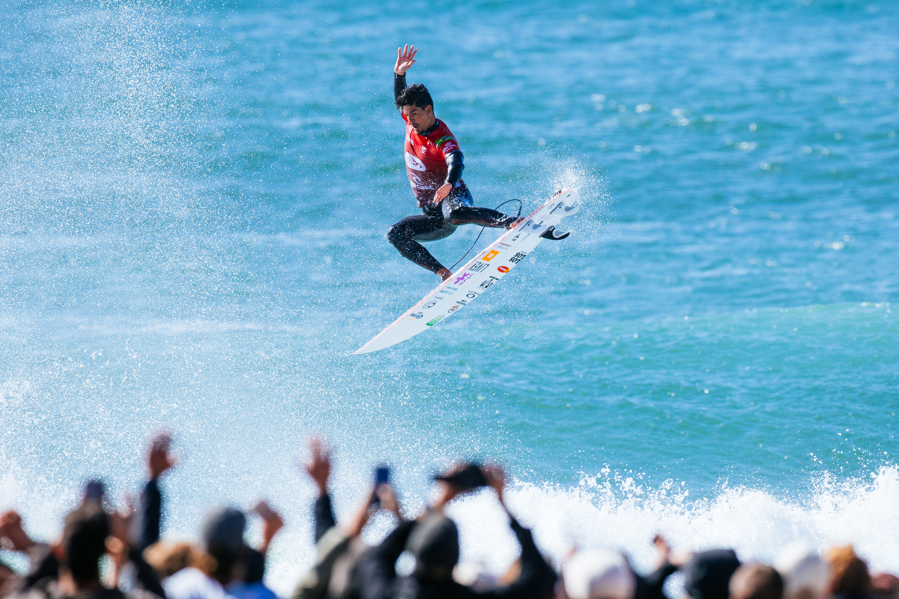

A Praia de Supertubos, em Peniche, Portugal, recebeu nesta sexta-feira, 23 de outubro, um dos dias mais emocionantes da temporada 2026 da World Surf League. O Finals Day da décima etapa do Championship Tour terminou com o norte-americano Griffin Colapinto superando Gabriel Medina, enquanto a australiana Molly Picklum venceu Caitlin Simmers e assumiu a liderança do ranking mundial feminino.
Antes das decisões, a etapa portuguesa passou por dois dias consecutivos de day off, em 18 e 19 de outubro, devido à falta de condições adequadas do mar para a realização das baterias. A competição foi retomada no dia 20, quando foram definidos os semifinalistas. A programação ainda sofreu novos ajustes por causa das condições de Supertubos, até a realização do Finals Day hoje.
O Brasil chegou à reta final com três representantes entre os quatro semifinalistas masculinos: Gabriel Medina, Italo Ferreira e Yago Dora. A possibilidade de um título brasileiro era grande, mas Colapinto atravessou o caminho da Brazilian Storm, eliminou Yago e depois protagonizou uma virada memorável sobre Medina.
A etapa portuguesa,, foi a antepenúltima do calendário mundial. Além dos troféus, estavam em jogo pontos fundamentais para a definição dos campeões de 2026, em uma temporada que voltou a utilizar o sistema de classificação por pontos corridos, com encerramento previsto para Pipeline, no Havaí.
Griffin Colapinto supera Medina com nota 9,43
A final masculina reuniu dois surfistas acostumados aos grandes palcos do circuito. De um lado, Gabriel Medina, tricampeão mundial e vencedor em Peniche em 2017. Do outro, Colapinto, que já havia conquistado a etapa portuguesa em 2022 e 2024.
O confronto começou em ritmo intenso. Colapinto abriu sua participação na bateria com uma onda de 8,17 pontos, enquanto Medina respondeu com 7,67. O norte-americano encontrou outra oportunidade e marcou 7,57, chegando a 15,74 pontos na soma das duas melhores ondas.
Medina reagiu com um tubo profundo, recebeu 8,20 e assumiu a liderança por uma diferença mínima. A disputa ganhou ainda mais intensidade quando o brasileiro encontrou outra onda de grande potencial e conseguiu 8,57 pontos.
Com 16,77 no somatório, Medina colocou enorme pressão sobre o adversário. Colapinto precisava encontrar um tubo excepcional para recuperar a primeira posição.
Foi exatamente o que aconteceu.
O norte-americano percorreu um tubo longo e profundo, conseguiu completar a onda e recebeu 9,43 dos juízes, a maior nota da bateria. O resultado elevou seu somatório para 17,60 pontos e deixou Medina precisando de 9,04 para recuperar a liderança.
O brasileiro ainda encontrou uma oportunidade e tentou completar uma combinação de tubo e aéreo, mas não conseguiu finalizar a onda. Colapinto confirmou a vitória e conquistou seu terceiro título em Peniche.
Veja bateria abaixo:
Mais do que a conquista de uma etapa, o resultado consolidou a relação do norte-americano com Supertubos, onde passou a acumular vitórias nas edições de 2022, 2024 e 2026.
Medina elimina Italo Ferreira em semifinal brasileira
Antes da decisão, o Finals Day reservou um confronto entre Gabriel Medina e Italo Ferreira, dois dos principais nomes da história recente do surfe brasileiro.
A semifinal apresentou condições difíceis no início, exigindo paciência na escolha das ondas. Italo começou melhor e conseguiu construir vantagem enquanto Medina encontrava dificuldades para completar suas primeiras tentativas.
A reação do tricampeão mundial veio com uma onda de 8,17 pontos, que mudou completamente o cenário da bateria.
Medina terminou com 11,67 pontos, contra 10,10 de Italo, garantindo sua classificação à final.
Veja a bateria abaixo:
Apesar da eliminação, o campeão olímpico permaneceu entre os primeiros colocados do ranking mundial. A campanha de Italo em Portugal reforçou sua regularidade ao longo de uma temporada.
Yago Dora cai nas semifinais mas mantém a liderança
A segunda semifinal masculina colocou frente a frente Yago Dora, campeão mundial de 2025 e vencedor da edição anterior de Peniche, e Griffin Colapinto.
O norte-americano conseguiu construir vantagem e terminou com 14,33 pontos, contra 8,83 do brasileiro.
Durante o confronto, Yago sofreu uma queda e precisou sair da água para trocar a prancha danificada. A interrupção prejudicou sua tentativa de reação, enquanto Colapinto encontrou novas oportunidades para ampliar o somatório.
Veja a bateria abaixo:
Mesmo sem alcançar a final, Yago deixou Portugal na liderança do ranking mundial masculino.
Molly Picklum vence e assume o topo do ranking feminino
A decisão feminina também teve uma disputa equilibrada, reunindo duas campeãs mundiais: a australiana Molly Picklum, dona do título mundial de 2025, e a norte-americana Caitlin Simmers, campeã em 2024.
Picklum conseguiu duas ondas avaliadas em 7,83 e 5,50 pontos, formando um somatório de 13,33.
Simmers respondeu com notas 6,67 e 6,17, totalizando 12,84 pontos. A norte-americana buscou uma última oportunidade de virada, mas não conseguiu completar o tubo que poderia alterar o resultado.
Veja a bateria abaixo:
A vitória representou a primeira conquista de Molly Picklum na etapa portuguesa e também seu primeiro título de etapa na temporada 2026.
O resultado teve impacto direto na classificação mundial. A australiana assumiu a liderança do ranking feminino e passou a ocupar a posição mais importante da disputa pelo título da temporada, com duas etapas ainda previstas no calendário.
Para Simmers, o vice-campeonato confirmou uma campanha competitiva em Peniche, local onde ela já havia conquistado o título em 2023.
Como ficou a disputa pelo título mundial masculino
O resultado de Peniche deixou a corrida pelo título mundial ainda mais interessante.
Yago Dora manteve a liderança, seguido por Italo Ferreira. Griffin Colapinto, impulsionado pela vitória na etapa, chegou à terceira colocação, enquanto Gabriel Medina passou a ocupar o quarto lugar. Miguel Pupo completou o grupo dos cinco primeiros.
Assim, o Brasil permaneceu com quatro surfistas entre os cinco primeiros colocados do Championship Tour masculino.
O vice-campeonato também foi importante para Medina, que disputou sua terceira final de etapa na temporada. Apesar de não conseguir o troféu em Portugal, o brasileiro somou pontos relevantes para continuar na disputa pelo título mundial.
A vitória de Colapinto, por outro lado, colocou mais um adversário diretamente na briga pelas primeiras posições e reduziu a margem de tranquilidade dos líderes.
Confira as cinco primeiras posições do ranking mundial masculino após a conclusão do MEO Rip Curl Pro Portugal:
- 1. Yago Dora (Brasil) — 48.865 pontos
- 2. Italo Ferreira (Brasil) — 46.015 pontos
- 3. Griffin Colapinto (Estados Unidos) — 43.695 pontos
- 4. Gabriel Medina (Brasil) — 43.210 pontos
- 5. Miguel Pupo (Brasil) — 42.770 pontos
O resultado mantém Yago Dora à frente da classificação, mas evidencia como a disputa permanece aberta.
Ranking feminino
Nas mulheres, a vitória de Molly Picklum alterou a liderança da temporada. A australiana superou Carissa Moore e Gabriela Bryan na classificação geral, enquanto Caitlin Simmers ganhou posições com o vice-campeonato.
Confira as cinco primeiras colocadas e suas pontuações após o Finals Day:
- 1. Molly Picklum (Austrália) — 48.950 pontos
- 2. Carissa Moore (Havaí) — 47.065 pontos
- 3. Gabriela Bryan (Havaí) — 44.865 pontos
- 4. Erin Brooks (Canadá) — 42.745 pontos
- 5. Sawyer Lindblad (Estados Unidos) — 42.055 pontos
- 6. Caitlin Simmers (Estados Unidos) — 39.610 pontos
A liderança de Molly Picklum representa uma mudança importante no cenário feminino. A campeã mundial de 2025 chegou a Portugal na quarta posição e saiu com a lycra amarela, símbolo da primeira colocação do Championship Tour.
Próxima etapa será nas Filipinas
Depois do MEO Rip Curl Pro, o Championship Tour tem como próxima parada Cloud 9, na ilha de Siargao, nas Filipinas.
A competição está programada para ocorrer entre 31 de outubro e 10 de novembro de 2026.
A etapa filipina representa mais uma oportunidade para os candidatos aos títulos mundiais somarem pontos antes do encerramento da temporada em Pipeline, no Havaí, previsto para dezembro.
No masculino, o foco permanece sobre a disputa envolvendo principalmente a Brazilian Storm.
No feminino, Molly Picklum chega à reta final fortalecida pela vitória em Peniche e pela liderança conquistada sobre as principais adversárias.
Peniche 2026
O encerramento da etapa portuguesa reuniu elementos que explicam o prestígio de Supertubos no surfe profissional: condições exigentes, tubos de alto nível e decisões definidas por pequenas diferenças de pontuação.
Griffin Colapinto escreveu mais um capítulo de sua história na praia portuguesa ao conquistar o terceiro título no local, justamente depois de superar dois dos principais candidatos brasileiros ao campeonato mundial.
Gabriel Medina deixou a competição com um vice-campeonato e uma atuação de alto nível técnico, especialmente na final. Italo Ferreira e Yago Dora também alcançaram as semifinais, preservando a presença brasileira no grupo de protagonistas do circuito.
No feminino, Molly Picklum transformou sua primeira vitória em Portugal em um resultado decisivo para a temporada, assumindo a liderança mundial no momento em que a competição se aproxima de sua conclusão.
Peniche, mais uma vez, mostrou por que ocupa um lugar especial no calendário do surfe. O Finals Day de 2026 não foi apenas o encerramento de uma etapa: foi um capítulo importante de uma corrida mundial que continuou aberta, com o Brasil fortemente representado e os principais candidatos ao título separados por diferenças que ainda poderiam ser alteradas nas ondas seguintes.